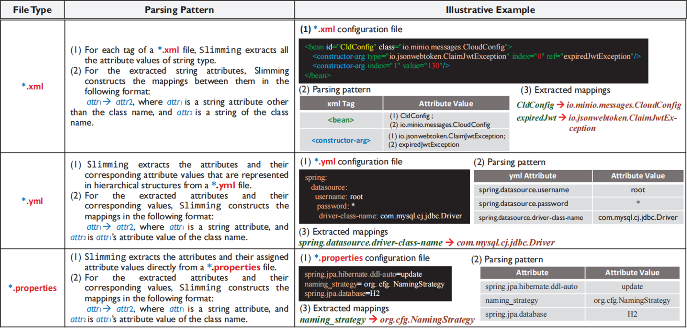
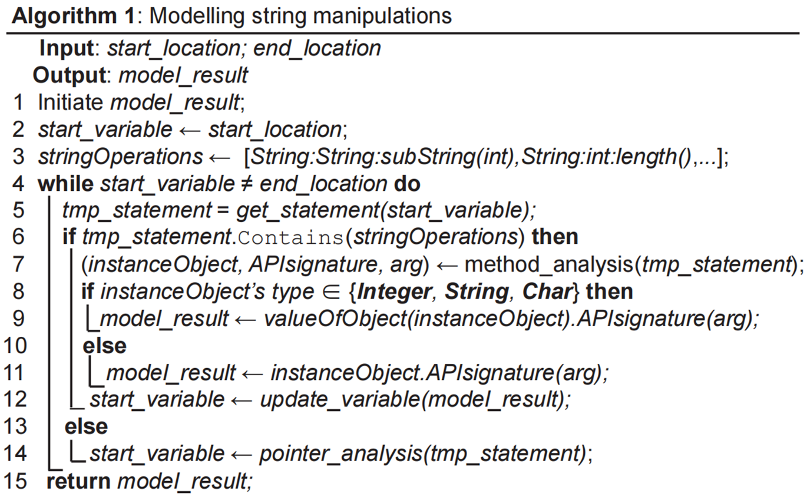
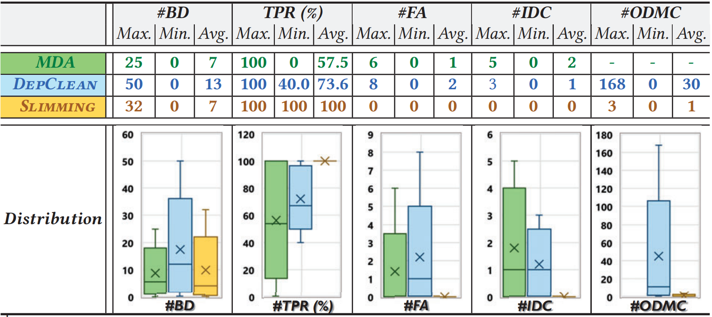
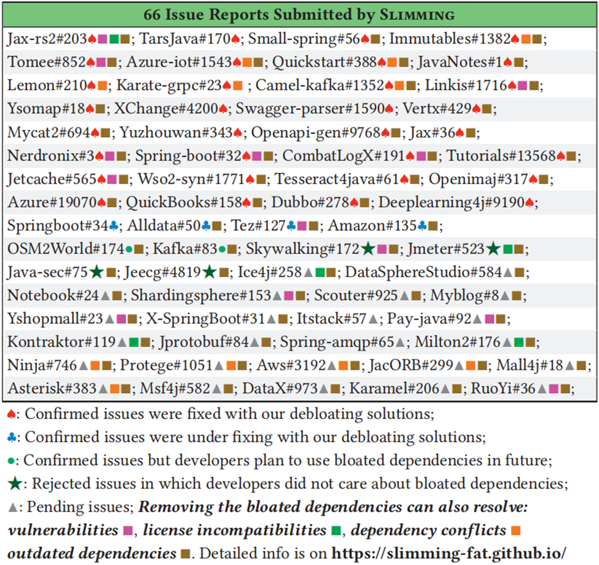

前言
这是本周三我要分享的论文，在这里浅谈一下我对于Efficiently Trimming the Fat: Streamlining Software Dependencies with Java Reflection and Dependency Analysis的理解。
Contributions
Comprehensive datasets. (1) a high-quality benchmark including 3,520 reflective calls captured by dynamic techniques from a collection of framework-based Java projects for evaluating the effectiveness of reflection analysis techniques; (2) a dataset of 40 projects with 100% test coverage for Java byte code instructions for evaluating the reliability of debloating solutions.”
另外还提供了在线网站方便你来复现文章的内容。
Background
依赖管理工具虽然通过自动获取编译、测试和部署客户端项目所需的所有直接和传递性第三方依赖促进了软件的复用，但实际上，很多引入的第三方库并未被客户端代码实际所使用，导致软件项目逐渐臃肿。
Issues
Bloated software negatively affects code performance on resource-constrained devices with limited memory. Additionally, it poses a direct security threat since unused libraries increase security attack surfaces and introduces an extra burden for dependency management. Software developers may spend much effort to manage unnecessary dependencies.
However, the prior debloating techniques can easily produce false alarms of bloated dependencies since they are less effective in analyzing Java reflections. Besides, the solutions given by the existing approaches for removing bloated dependencies may induce new issues that are not conducive to dependency management.
Challenges
Challenge #2: Existing reflection analyses resolve class-level reflective targets by statically analyzing the string arguments of class-retrieving method calls. The arguments can be non-constant strings that undergo both intra-procedurally and inter-procedurally string operations (e.g., “append()”), which cannot be fully resolved by the existing techniques.
比如这个图上的例子，第14行通过依赖注入技术将第十行的注释和第十一行的配置文件注入到实例应用程序当中。第15行反射目标 io.minio.messages.CloudConfig 由 SpringBoot 框架 API 的ApplicationContext.getBean（）就要通过前面的参数 CldConfig 返回。然而，返回类型和API参数的值只能从数据流中捕获，不能通过静态分析来解析，缺少对此依赖的解析会导致误报。
另外第16行由 API NotifConfig.getMessgae（） 触发的调用链由于通过类检索方法 forname 返回对象前经历了“ + ”和“ substring() ”，然而，现有的基于 Doop 构建的静态反射分析技术对包括 “+” 和 “append（）” 在内的简单字符串操作进行建模，以解析反射目标，但它们无法处理其他复杂的字符串操作，也会导致无法解析而产生误报。
以此图为例，这是一个流行的开源项目Spring-amqp的依赖关系图，springframework: context 被识别为臃肿依赖，但是它引入了三个库，由项目通过其直接依赖项 amqp:spring-rabbit:2.3.9 使用，为了确保程序能正确运行，在删除臃肿的依赖库之后，要将这三个依赖项声明为 amqp 的直接依赖项。这在后续的开发和维护中，会有这样的问题，开发人员要花精力保证其版本是最新的，但是他可能与库 amqp 本身的异步演化版本不兼容。除此之外，还能看到依赖关系图中引入了两个版本的 spring-core 库，构建工具加载了5.3.8，而隐藏了 sprigframework:spring-core:5.3.7。如果开发人员将5.3.8声明为直接依赖项，其更新版本也可能导致与 springframework:beans:5.3.8 不兼容的问题。
Approach
Slimming models all the string operations defined by JDK for inferring non-constant strings of class receiving methods.
generates the solutions by weighing the against the of dependency management.
这个利用 Soot 的部分不用细说，这篇文章是如何完成静态分析剩下的任务的呢。
因为框架封装的反射 API 使用字符串文字作为其参数来返回反射目标，以映射配置文件中的类名。所以Slimming在给定项目中收集并解析三种类型的配置文件，来提取完全限定类名及其相应字符串文字的映射，解析模式如图所示：
Slimming 会检查其字符串参数是否映射了配置文件中的完全限定类名。Slimming工具将映射的类名视为框架封装的反射 API 返回的反射目标。
除了框架封装的反射API，Slimming还涉及现代JAVA项目中最广泛使用的四种类检索方法Class::forName、ClassLoader::loadClass、Object::getClass 和 .class，这些对象通过调用类检索返回。如果调用的是常量字符串，只需要将类名的参数视为反射目标，然而在实践中，65.3%的反射API是经过过程内和过程外操作的非常量字符串。为了精确解析非常量字符串参数，Slimming对JDK定义的所有字符串操作进行建模，用于推断字符串操作。这分为三个任务，分别是标记字符串操作的结束位置，因为类接收方法的第一个参数通常是返回值，所以将其标记为字符串操作的结束位置；标记字符串操作的开始位置，从每个标记的结束位置开始，Slimming执行指针分析以跟踪数据流，并找到满足两个条件的字符串赋值语句：
- 分配的值是字符串常量；
- 分配的字符串变量不是接受赋值参数的函数的其它参数。
将此位置作为字符串操作的开始位置；然后对字符串操作进行建模如下：
开始位置和结束位置作为输入，并返回操作的结果即为。为了完全解析反射API的字符串参数，Slimming 收集了 JDK 的72种字符串操作，并将签名数组赋 stringOperations 。用start_variable记录当前字符串的信息，并获取他的语句，迭代，如果当前语句有字符串操作，根据签名数组内的内容和实际的参数执行相应的操作，若没有字符串操作则根据指针分析跟踪数据流，直到移动到结束位置。
-
如果删除臃肿的依赖项还可以解决四种类型的问题，则 Slimming 会考虑一种为依赖项管理带来额外好处的解决方案：
- 漏洞问题：臃肿的依赖项包含漏洞数据库中已披露的漏洞。Slimming 两个公认的数据库 GitHub Advisory DB 和 Snyk Vulnerability DB 收集易受攻击的库信息，作为评估的基础。
- 不兼容的许可证问题：臃肿的依赖项声明的开源许可证与客户项目的许可证不兼容。Slimming 根据 Free Software Foundation 网站 [7] 上提供的 389 个流行的开源许可证之间的兼容关系来检查不兼容的许可证问题
- 过时的依赖项问题：臃肿的依赖项是开发人员超过 N 年未维护的库。根据某规则定义的过时依赖项，Slimming 设置 N = 3 并在执行分析时收集 Maven Central Repository 中每个项目的上次更新日期。
- 依赖项冲突问题：直接或传递引入客户端项目的库的多个版本都被标识为臃肿的依赖项。Slimming 利用 maven-dependency-tree 插件报告的警告来捕获依赖项冲突问题。
还考虑了导致依赖关系成本管理的因素，设BD = {lib1,lib2,…libn}是给定项目的臃肿依赖，TD = {lib1,lib2,…libm} 是一个由臃肿的依赖项libi ∈ BD 传递引入的，RDi ∈ TDi 是由客户端项目引用。当去除libi之后，需要将 libk ∈ RDi声明为客户端项目的直接依赖。这就是代价。
Case 2: If 𝑇𝐷𝑖 ≠ ∅ and 𝑅𝐷𝑖 = ∅, Slimming removes the bloated dependency 𝑙𝑖𝑏𝑖 from configuration file.
Case 3: Suppose that 𝑇𝐷𝑖 ≠ ∅, 𝑅𝐷𝑖 ≠ ∅, and the bloated dependency 𝑙𝑖𝑏𝑖 also induces the issues of vulnerabilities/dependency conflicts/incompatible licenses/outdated dependencies. Since removing 𝑙𝑖𝑏𝑖 can bring additional benefits to dependency management, Slimming suggests developers perform such a debloating solution at a cost of additionally declaring its dependencies 𝑙𝑖𝑏𝑘 ∈ 𝑅𝐷𝑖 as direct dependencies of the client project.
如果臃肿依赖项不是从父模块继承的，Slimming 则会使用<exclusion>标签来执行去臃肿解决方案。<exclusion>标签用于在依赖声明中排除指定的传递性依赖，从而精准地移除不需要的依赖项，避免它们对项目造成不必要的负担。
在执行了去臃肿操作后，Slimming 会触发项目的捆绑测试。这些测试是项目开发过程中编写的，用于验证项目的功能是否正常。通过运行这些测试，Slimming 可以检查去臃肿解决方案是否会导致程序出现错误，例如是否因为移除了某个依赖项而导致某个功能无法正常工作，或者是否引发了新的异常等。
如果所有的测试都通过了，说明去臃肿操作没有对项目的正常功能造成负面影响，此时 Slimming 会最终报告一系列的臃肿依赖项以及相应的去臃肿解决方案。这个报告可以提供给开发者，让他们了解项目中存在的依赖问题以及如何解决这些问题，帮助他们更好地管理项目的依赖关系，提高项目的质量和可维护性。
Evaluation
RQ2 (Reliability of Debloating Solutions) :Can Slimming reliably remove the bloated dependencies without inducing new issues?
RQ3 (Usefulness of Slimming): Can Slimming provide useful solutions to assist developers remove bloated dependencies? Do the debloating solutions conform to developers’ viewpoints on software maintenance?
采用 6 个大型 DaCapo 数据集（2006-10-MR2）和动态技术从 37 个基于框架的 Java 项目中捕获的 3,520 个反射调用作为基准，以评估 Slimming 在反射分析（RQ1）中的有效性。使用 TamiFlex 识别所有反射目标，因为这里的Java 字节码指令的如此高测试覆盖率（100%）使我们能够利用动态程序分析工具 TamiFlex 完全捕获反射目标。
Type 2：来自类接收方法的常量字符串参数
Type 3：记录在框架配置文件中，需要与框架封装的反射 API通信
Type 4：饰有注释
将 Slimming 与三种最先进的反射分析技术进行比较，以评估它们的有效性。只考虑解析的反射类名来进行比较。评估指标。利用我们构建的基准，我们在评估中考虑了六个指标：（1） 真阳性 （TP）：Slimming 解析的反射目标由 TamiFlex 记录在基准中;（2） 假阳性 （FP）：Slimming 解析的反射目标没有被 TamiFlex 记录在基准测试中;（3） 假阴性 （FN）：反射目标由 TamiFlex 记录在基准测试中，但未被 Slimming 解决。
基于以上三个指标，我们可以得到 Precison、Recall 和 F 度量，如下所示：（a） 精度 = TP / （TP + FP）;（b） 召回：TP / （TP + FN）;（c） F 度量：2 × 精确率 × 召回率 / （精确率 + 召回率）。Precision 评估 Slimming 是否可以精确解析反射目标。Recall 评估 Slimming 在解析所有反射目标方面的能力。F 度量将 Precision 和 Recall 组合在一起 。
因为他们对 Java 字节码指令的 100% 测试覆盖率可以帮助验证删除已识别的臃肿依赖项是否会导致程序错误。两种最先进的消肿工具被视为baseline，以比较它们消肿解决方案的可靠性。评估指标。我们定义了四个评估指标：TPR（测试通过率）：可以通过捆绑测试的臃肿项目的比例。#FA （Number of False Alarms）：客户端项目通过 Java 反射调用的已删除依赖项的数量。#IDC （Number of Induced Dependency Conflicts）：由消肿解决方案引起的依赖冲突问题的数量。#ODMC （过度依赖管理案例数）：由消胀解决方案派生的另外声明的直接依赖项的数量。为了计算 #IDC，我们利用 Decca，一种最先进的检测工具来捕获依赖关系冲突。特别地，我们只关心可能导致运行时错误的依赖项冲突问题（例如，NoSuchMethodError）。
结果。此表格显示了 RQ2 的实验结果。对于收集的 40 个 Java 项目，平均而言，Slimming 生成的消肿解决方案可靠地删除了 7 个臃肿的依赖项，测试通过率为 100%，误报为 0。相比之下，平均而言，Mda 和 DepClean 分别以 57.5% 和 73.6% 的测试通过率删除了 7 个和 13 个膨胀的依赖项，以及 1 个和 2 个误报。瘦身在所有评估指标上都优于其他两个基线。
#FA 分析。由于 Slimming 有效的静态反射分析，它可以精确识别第三方库的所有使用情况，而不会产生误报。DepClean 是作为扩展 MDA 的 Maven 插件实现的。它们都依赖于 Asm 库来执行静态分析，该分析访问已编译项目的所有 .class 文件，以便注册对项目及其依赖项之间的类、方法和字段的字节码调用。由于 Asm 无法很好地处理反射调用，因此这两个基线可能会为臃肿的依赖项产生误报。
#IDC 和 #ODMC 分析。由于其有效的收益成本分析，这些解决方案不会引发依赖冲突问题，并且在去除臃肿的依赖后，平均只额外声明 1 个直接依赖。DepClean 采用了另一种去膨胀解决方案：它首先将所有使用的传递依赖项添加为直接依赖项，然后排除所有膨胀的依赖项。因此，DepClean 会诱发许多过度依赖管理的情况，这可能会引发新的问题（例如，依赖冲突），并给项目开发人员带来很大的维护负担。由于 Mda 没有提供删除臃肿依赖项的解决方案，因此我们无法计算其 #ODMC 指标。
根据开发者的反馈评估其有效性。表 8 总结了报告的问题的状态。在提交的 66 份问题报告中，开发人员迅速确认了其中 38 份 （57.6%），36 份确认报告 （54.5%） 后来使用Slimming的消胀解决方案进行了修复或修复不足。在 2 份已确认的报告 （3.0%） 中，开发人员没有合并我们的 PR，因为他们的项目计划在后续版本中使用臃肿的依赖项作为功能的扩展。在我们报告的 4 个问题 （6.1%） 中，开发人员表示他们不关心臃肿的依赖项。其他 24 份报告 （36.4%） 仍未处理，可能是由于项目维护不太活跃。在我们的 59 个问题报告中，删除臃肿的依赖项还可以解决：20 个漏洞、8 个许可证不兼容、11 个依赖项冲突和 243 个过时的依赖项。